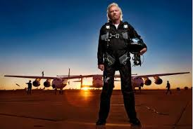
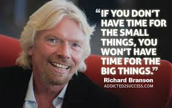

Welcome to the blog of Richard Branson
|

Richard Branson
Nama Lengkap : Richard Charles Nicholas Branson Alias : No Alias Tempat Lahir : London, Inggris Tanggal Lahir : Selasa, 18 Juli 1950 Zodiak : Cancer Warga Negara : Inggris Istri : Kristen Tomassi, Joan Templeman |

|
Charles Richard Nicholas Branson lahir pada tanggal 18 Juli 1950 di Surrey, London, Inggris. Ia merupakan anak dari pasangan Edward James Branson yang bekerja sebagai pengacara dan Eve Branson yang merupakan seorang pramugari. Richard muda adalah anak yang mempunyai kelaninan disleksia, sehingga ia mengalami kesulitan ketika bersekolah. Tapi, pada usia 16 tahun ia sudah mampu mempublikasikan majalah yang mampu meraup $8.000 dari pemasukan iklan. Dengan angka pemasukan dari iklan yang sangat fantastis, edisi pertama yang berjumlah 50.000 eksemplar tersebut pun dipasarkan secara gratis.
Pada 1969, Branson mendirikan perusahaan rekaman berbasis mail-order yang ia namakan Virgin. Meskipun dijalankan dengan manajemen yang sederhana, perusahaan ini mampu memperluas usaha bisnisnya hingga dapat membuka sebuah studio rekaman di Oxford Street, London. Artis pertama yang dibesarkan oleh label Virgin Records adalah Mike Oldfield. Lagu-lagu Mike Oldfield kemudian menjadi hits dan mampu bertahan di tangga lagu Inggris selama 247 minggu. Memanfaatkan momentum keberhasilan Oldfield tersebut, Branson kemudian mendatangkan beberapa kelompok musik lain termasuk Sex Pistols, Culture Club, Rolling Stones, dan Genesis yang akhirnya menjadikan Virgin Music sebagai salah satu dari enam besar perusahaan rekaman di dunia.
Branson Virgin Group kini memiliki lebih dari 200 perusahaan di lebih dari 30 negara termasuk Inggris, Amerika Serikat, Australia, Kanada, Asia, Eropa dan Afrika Selatan. Dia telah memperluas bisnisnya dengan membuka Voyager Group pada tahun 1980, maskapai penerbangan Virgin Atlantic pada 1984, Virgin Megastore, perusahaan kereta api, resor judi mewah, perusahaan telepon seluler, dan sebuah travel agensi ruang angkasa yang bernama Virgin Galactic
Branson juga dikenal karena memperoleh gelar kebangsawanan dari Kerajaan Inggris pada tahun 1999 atas kontribusinya dalam berwirausaha.